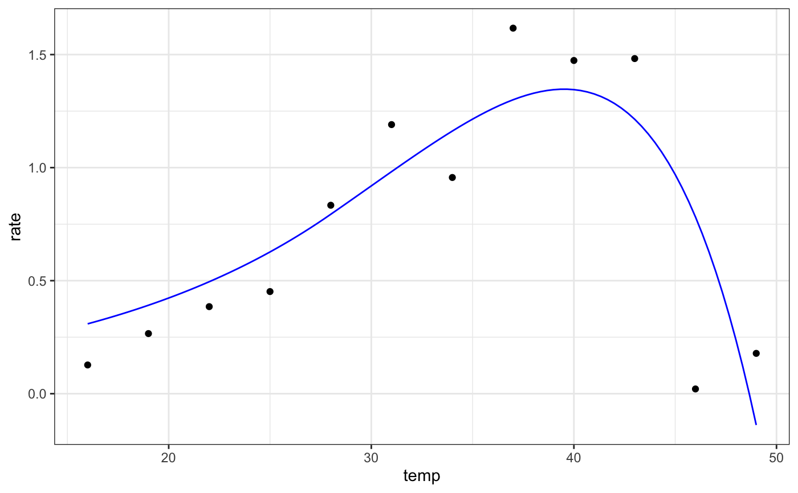

Rezende 2019 model for fitting thermal performance curves
rezende_2019(temp, q10, a, b, c)
| temp | temperature in degrees centigrade |
|---|---|
| q10 | defines the fold change in performance as a result of increasing the temperature by 10 ºC |
| a | parameter describing shifts in rate |
| b | parameter threshold temperature (ºC) beyond which the downward curve starts |
| c | parameter controlling the rate of decline beyond the threshold temperature, b |
Equation: $$\textrm{if} \quad temp < t_{max}: rate = a \cdot 10 ^{\frac{\log_{10} (q_{10})}{(\frac{10}{temp})}}$$ $$\textrm{if} \quad temp > t_{max}: rate = a \cdot 10 ^{\frac{\log_{10} (q_{10})}{(\frac{10}{temp})}} \cdot \bigg(1-d(temp-t_{max})^2 \bigg)$$
Start values in get_start_vals are derived from the data and previous values in the literature.
Limits in get_lower_lims and get_upper_lims are based on extreme values that are unlikely to occur in ecological settings.
Generally we found this model easy to fit.
Rezende, Enrico L., and Francisco Bozinovic. Thermal performance across levels of biological organization. Philosophical Transactions of the Royal Society B 374.1778 (2019): 20180549.
# load in ggplot library(ggplot2) # subset for the first TPC curve data('chlorella_tpc') d <- subset(chlorella_tpc, curve_id == 1) # get start values and fit model start_vals <- get_start_vals(d$temp, d$rate, model_name = 'rezende_2019') # fit model mod <- nls.multstart::nls_multstart(rate~rezende_2019(temp = temp, q10, a, b, c), data = d, iter = c(4,4,4,4), start_lower = start_vals - 10, start_upper = start_vals + 10, lower = get_lower_lims(d$temp, d$rate, model_name = 'rezende_2019'), upper = get_upper_lims(d$temp, d$rate, model_name = 'rezende_2019'), supp_errors = 'Y', convergence_count = FALSE)#> Warning: Problem with `mutate()` input `AICval`. #> ℹ NaNs produced #> ℹ Input `AICval` is `purrr::map_dbl(startpars, ~fit_aic(startpars))`. #> ℹ The error occurred in group 1: iteration = 1.#> Warning: NaNs produced#> Warning: Problem with `mutate()` input `AICval`. #> ℹ NaNs produced #> ℹ Input `AICval` is `purrr::map_dbl(startpars, ~fit_aic(startpars))`. #> ℹ The error occurred in group 1: iteration = 1.#> Warning: NaNs produced#> Warning: Problem with `mutate()` input `AICval`. #> ℹ NaNs produced #> ℹ Input `AICval` is `purrr::map_dbl(startpars, ~fit_aic(startpars))`. #> ℹ The error occurred in group 2: iteration = 2.#> Warning: NaNs produced#> Warning: Problem with `mutate()` input `AICval`. #> ℹ NaNs produced #> ℹ Input `AICval` is `purrr::map_dbl(startpars, ~fit_aic(startpars))`. #> ℹ The error occurred in group 2: iteration = 2.#> Warning: NaNs produced#> Warning: Problem with `mutate()` input `AICval`. #> ℹ NaNs produced #> ℹ Input `AICval` is `purrr::map_dbl(startpars, ~fit_aic(startpars))`. #> ℹ The error occurred in group 5: iteration = 5.#> Warning: NaNs produced#> Warning: Problem with `mutate()` input `AICval`. #> ℹ NaNs produced #> ℹ Input `AICval` is `purrr::map_dbl(startpars, ~fit_aic(startpars))`. #> ℹ The error occurred in group 5: iteration = 5.#> Warning: NaNs produced#> Warning: Problem with `mutate()` input `AICval`. #> ℹ NaNs produced #> ℹ Input `AICval` is `purrr::map_dbl(startpars, ~fit_aic(startpars))`. #> ℹ The error occurred in group 6: iteration = 6.#> Warning: NaNs produced#> Warning: Problem with `mutate()` input `AICval`. #> ℹ NaNs produced #> ℹ Input `AICval` is `purrr::map_dbl(startpars, ~fit_aic(startpars))`. #> ℹ The error occurred in group 6: iteration = 6.#> Warning: NaNs produced#> Warning: Problem with `mutate()` input `AICval`. #> ℹ NaNs produced #> ℹ Input `AICval` is `purrr::map_dbl(startpars, ~fit_aic(startpars))`. #> ℹ The error occurred in group 9: iteration = 9.#> Warning: NaNs produced#> Warning: Problem with `mutate()` input `AICval`. #> ℹ NaNs produced #> ℹ Input `AICval` is `purrr::map_dbl(startpars, ~fit_aic(startpars))`. #> ℹ The error occurred in group 9: iteration = 9.#> Warning: NaNs produced#> Warning: Problem with `mutate()` input `AICval`. #> ℹ NaNs produced #> ℹ Input `AICval` is `purrr::map_dbl(startpars, ~fit_aic(startpars))`. #> ℹ The error occurred in group 10: iteration = 10.#> Warning: NaNs produced#> Warning: Problem with `mutate()` input `AICval`. #> ℹ NaNs produced #> ℹ Input `AICval` is `purrr::map_dbl(startpars, ~fit_aic(startpars))`. #> ℹ The error occurred in group 10: iteration = 10.#> Warning: NaNs produced#> Warning: Problem with `mutate()` input `AICval`. #> ℹ NaNs produced #> ℹ Input `AICval` is `purrr::map_dbl(startpars, ~fit_aic(startpars))`. #> ℹ The error occurred in group 13: iteration = 13.#> Warning: NaNs produced#> Warning: Problem with `mutate()` input `AICval`. #> ℹ NaNs produced #> ℹ Input `AICval` is `purrr::map_dbl(startpars, ~fit_aic(startpars))`. #> ℹ The error occurred in group 13: iteration = 13.#> Warning: NaNs produced#> Warning: Problem with `mutate()` input `AICval`. #> ℹ NaNs produced #> ℹ Input `AICval` is `purrr::map_dbl(startpars, ~fit_aic(startpars))`. #> ℹ The error occurred in group 14: iteration = 14.#> Warning: NaNs produced#> Warning: Problem with `mutate()` input `AICval`. #> ℹ NaNs produced #> ℹ Input `AICval` is `purrr::map_dbl(startpars, ~fit_aic(startpars))`. #> ℹ The error occurred in group 14: iteration = 14.#> Warning: NaNs produced#> Warning: Problem with `mutate()` input `AICval`. #> ℹ NaNs produced #> ℹ Input `AICval` is `purrr::map_dbl(startpars, ~fit_aic(startpars))`. #> ℹ The error occurred in group 17: iteration = 17.#> Warning: NaNs produced#> Warning: Problem with `mutate()` input `AICval`. #> ℹ NaNs produced #> ℹ Input `AICval` is `purrr::map_dbl(startpars, ~fit_aic(startpars))`. #> ℹ The error occurred in group 17: iteration = 17.#> Warning: NaNs produced#> Warning: Problem with `mutate()` input `AICval`. #> ℹ NaNs produced #> ℹ Input `AICval` is `purrr::map_dbl(startpars, ~fit_aic(startpars))`. #> ℹ The error occurred in group 18: iteration = 18.#> Warning: NaNs produced#> Warning: Problem with `mutate()` input `AICval`. #> ℹ NaNs produced #> ℹ Input `AICval` is `purrr::map_dbl(startpars, ~fit_aic(startpars))`. #> ℹ The error occurred in group 18: iteration = 18.#> Warning: NaNs produced#> Warning: Problem with `mutate()` input `AICval`. #> ℹ NaNs produced #> ℹ Input `AICval` is `purrr::map_dbl(startpars, ~fit_aic(startpars))`. #> ℹ The error occurred in group 21: iteration = 21.#> Warning: NaNs produced#> Warning: Problem with `mutate()` input `AICval`. #> ℹ NaNs produced #> ℹ Input `AICval` is `purrr::map_dbl(startpars, ~fit_aic(startpars))`. #> ℹ The error occurred in group 21: iteration = 21.#> Warning: NaNs produced#> Warning: Problem with `mutate()` input `AICval`. #> ℹ NaNs produced #> ℹ Input `AICval` is `purrr::map_dbl(startpars, ~fit_aic(startpars))`. #> ℹ The error occurred in group 22: iteration = 22.#> Warning: NaNs produced#> Warning: Problem with `mutate()` input `AICval`. #> ℹ NaNs produced #> ℹ Input `AICval` is `purrr::map_dbl(startpars, ~fit_aic(startpars))`. #> ℹ The error occurred in group 22: iteration = 22.#> Warning: NaNs produced#> Warning: Problem with `mutate()` input `AICval`. #> ℹ NaNs produced #> ℹ Input `AICval` is `purrr::map_dbl(startpars, ~fit_aic(startpars))`. #> ℹ The error occurred in group 25: iteration = 25.#> Warning: NaNs produced#> Warning: Problem with `mutate()` input `AICval`. #> ℹ NaNs produced #> ℹ Input `AICval` is `purrr::map_dbl(startpars, ~fit_aic(startpars))`. #> ℹ The error occurred in group 25: iteration = 25.#> Warning: NaNs produced#> Warning: Problem with `mutate()` input `AICval`. #> ℹ NaNs produced #> ℹ Input `AICval` is `purrr::map_dbl(startpars, ~fit_aic(startpars))`. #> ℹ The error occurred in group 26: iteration = 26.#> Warning: NaNs produced#> Warning: Problem with `mutate()` input `AICval`. #> ℹ NaNs produced #> ℹ Input `AICval` is `purrr::map_dbl(startpars, ~fit_aic(startpars))`. #> ℹ The error occurred in group 26: iteration = 26.#> Warning: NaNs produced#> Warning: Problem with `mutate()` input `AICval`. #> ℹ NaNs produced #> ℹ Input `AICval` is `purrr::map_dbl(startpars, ~fit_aic(startpars))`. #> ℹ The error occurred in group 29: iteration = 29.#> Warning: NaNs produced#> Warning: Problem with `mutate()` input `AICval`. #> ℹ NaNs produced #> ℹ Input `AICval` is `purrr::map_dbl(startpars, ~fit_aic(startpars))`. #> ℹ The error occurred in group 29: iteration = 29.#> Warning: NaNs produced#> Warning: Problem with `mutate()` input `AICval`. #> ℹ NaNs produced #> ℹ Input `AICval` is `purrr::map_dbl(startpars, ~fit_aic(startpars))`. #> ℹ The error occurred in group 30: iteration = 30.#> Warning: NaNs produced#> Warning: Problem with `mutate()` input `AICval`. #> ℹ NaNs produced #> ℹ Input `AICval` is `purrr::map_dbl(startpars, ~fit_aic(startpars))`. #> ℹ The error occurred in group 30: iteration = 30.#> Warning: NaNs produced#> Warning: Problem with `mutate()` input `AICval`. #> ℹ NaNs produced #> ℹ Input `AICval` is `purrr::map_dbl(startpars, ~fit_aic(startpars))`. #> ℹ The error occurred in group 33: iteration = 33.#> Warning: NaNs produced#> Warning: Problem with `mutate()` input `AICval`. #> ℹ NaNs produced #> ℹ Input `AICval` is `purrr::map_dbl(startpars, ~fit_aic(startpars))`. #> ℹ The error occurred in group 33: iteration = 33.#> Warning: NaNs produced#> Warning: Problem with `mutate()` input `AICval`. #> ℹ NaNs produced #> ℹ Input `AICval` is `purrr::map_dbl(startpars, ~fit_aic(startpars))`. #> ℹ The error occurred in group 34: iteration = 34.#> Warning: NaNs produced#> Warning: Problem with `mutate()` input `AICval`. #> ℹ NaNs produced #> ℹ Input `AICval` is `purrr::map_dbl(startpars, ~fit_aic(startpars))`. #> ℹ The error occurred in group 34: iteration = 34.#> Warning: NaNs produced#> Warning: Problem with `mutate()` input `AICval`. #> ℹ NaNs produced #> ℹ Input `AICval` is `purrr::map_dbl(startpars, ~fit_aic(startpars))`. #> ℹ The error occurred in group 37: iteration = 37.#> Warning: NaNs produced#> Warning: Problem with `mutate()` input `AICval`. #> ℹ NaNs produced #> ℹ Input `AICval` is `purrr::map_dbl(startpars, ~fit_aic(startpars))`. #> ℹ The error occurred in group 37: iteration = 37.#> Warning: NaNs produced#> Warning: Problem with `mutate()` input `AICval`. #> ℹ NaNs produced #> ℹ Input `AICval` is `purrr::map_dbl(startpars, ~fit_aic(startpars))`. #> ℹ The error occurred in group 38: iteration = 38.#> Warning: NaNs produced#> Warning: Problem with `mutate()` input `AICval`. #> ℹ NaNs produced #> ℹ Input `AICval` is `purrr::map_dbl(startpars, ~fit_aic(startpars))`. #> ℹ The error occurred in group 38: iteration = 38.#> Warning: NaNs produced#> Warning: Problem with `mutate()` input `AICval`. #> ℹ NaNs produced #> ℹ Input `AICval` is `purrr::map_dbl(startpars, ~fit_aic(startpars))`. #> ℹ The error occurred in group 41: iteration = 41.#> Warning: NaNs produced#> Warning: Problem with `mutate()` input `AICval`. #> ℹ NaNs produced #> ℹ Input `AICval` is `purrr::map_dbl(startpars, ~fit_aic(startpars))`. #> ℹ The error occurred in group 41: iteration = 41.#> Warning: NaNs produced#> Warning: Problem with `mutate()` input `AICval`. #> ℹ NaNs produced #> ℹ Input `AICval` is `purrr::map_dbl(startpars, ~fit_aic(startpars))`. #> ℹ The error occurred in group 42: iteration = 42.#> Warning: NaNs produced#> Warning: Problem with `mutate()` input `AICval`. #> ℹ NaNs produced #> ℹ Input `AICval` is `purrr::map_dbl(startpars, ~fit_aic(startpars))`. #> ℹ The error occurred in group 42: iteration = 42.#> Warning: NaNs produced#> Warning: Problem with `mutate()` input `AICval`. #> ℹ NaNs produced #> ℹ Input `AICval` is `purrr::map_dbl(startpars, ~fit_aic(startpars))`. #> ℹ The error occurred in group 45: iteration = 45.#> Warning: NaNs produced#> Warning: Problem with `mutate()` input `AICval`. #> ℹ NaNs produced #> ℹ Input `AICval` is `purrr::map_dbl(startpars, ~fit_aic(startpars))`. #> ℹ The error occurred in group 45: iteration = 45.#> Warning: NaNs produced#> Warning: Problem with `mutate()` input `AICval`. #> ℹ NaNs produced #> ℹ Input `AICval` is `purrr::map_dbl(startpars, ~fit_aic(startpars))`. #> ℹ The error occurred in group 46: iteration = 46.#> Warning: NaNs produced#> Warning: Problem with `mutate()` input `AICval`. #> ℹ NaNs produced #> ℹ Input `AICval` is `purrr::map_dbl(startpars, ~fit_aic(startpars))`. #> ℹ The error occurred in group 46: iteration = 46.#> Warning: NaNs produced#> Warning: Problem with `mutate()` input `AICval`. #> ℹ NaNs produced #> ℹ Input `AICval` is `purrr::map_dbl(startpars, ~fit_aic(startpars))`. #> ℹ The error occurred in group 49: iteration = 49.#> Warning: NaNs produced#> Warning: Problem with `mutate()` input `AICval`. #> ℹ NaNs produced #> ℹ Input `AICval` is `purrr::map_dbl(startpars, ~fit_aic(startpars))`. #> ℹ The error occurred in group 49: iteration = 49.#> Warning: NaNs produced#> Warning: Problem with `mutate()` input `AICval`. #> ℹ NaNs produced #> ℹ Input `AICval` is `purrr::map_dbl(startpars, ~fit_aic(startpars))`. #> ℹ The error occurred in group 50: iteration = 50.#> Warning: NaNs produced#> Warning: Problem with `mutate()` input `AICval`. #> ℹ NaNs produced #> ℹ Input `AICval` is `purrr::map_dbl(startpars, ~fit_aic(startpars))`. #> ℹ The error occurred in group 50: iteration = 50.#> Warning: NaNs produced#> Warning: Problem with `mutate()` input `AICval`. #> ℹ NaNs produced #> ℹ Input `AICval` is `purrr::map_dbl(startpars, ~fit_aic(startpars))`. #> ℹ The error occurred in group 53: iteration = 53.#> Warning: NaNs produced#> Warning: Problem with `mutate()` input `AICval`. #> ℹ NaNs produced #> ℹ Input `AICval` is `purrr::map_dbl(startpars, ~fit_aic(startpars))`. #> ℹ The error occurred in group 53: iteration = 53.#> Warning: NaNs produced#> Warning: Problem with `mutate()` input `AICval`. #> ℹ NaNs produced #> ℹ Input `AICval` is `purrr::map_dbl(startpars, ~fit_aic(startpars))`. #> ℹ The error occurred in group 54: iteration = 54.#> Warning: NaNs produced#> Warning: Problem with `mutate()` input `AICval`. #> ℹ NaNs produced #> ℹ Input `AICval` is `purrr::map_dbl(startpars, ~fit_aic(startpars))`. #> ℹ The error occurred in group 54: iteration = 54.#> Warning: NaNs produced#> Warning: Problem with `mutate()` input `AICval`. #> ℹ NaNs produced #> ℹ Input `AICval` is `purrr::map_dbl(startpars, ~fit_aic(startpars))`. #> ℹ The error occurred in group 57: iteration = 57.#> Warning: NaNs produced#> Warning: Problem with `mutate()` input `AICval`. #> ℹ NaNs produced #> ℹ Input `AICval` is `purrr::map_dbl(startpars, ~fit_aic(startpars))`. #> ℹ The error occurred in group 57: iteration = 57.#> Warning: NaNs produced#> Warning: Problem with `mutate()` input `AICval`. #> ℹ NaNs produced #> ℹ Input `AICval` is `purrr::map_dbl(startpars, ~fit_aic(startpars))`. #> ℹ The error occurred in group 58: iteration = 58.#> Warning: NaNs produced#> Warning: Problem with `mutate()` input `AICval`. #> ℹ NaNs produced #> ℹ Input `AICval` is `purrr::map_dbl(startpars, ~fit_aic(startpars))`. #> ℹ The error occurred in group 58: iteration = 58.#> Warning: NaNs produced#> Warning: Problem with `mutate()` input `AICval`. #> ℹ NaNs produced #> ℹ Input `AICval` is `purrr::map_dbl(startpars, ~fit_aic(startpars))`. #> ℹ The error occurred in group 61: iteration = 61.#> Warning: NaNs produced#> Warning: Problem with `mutate()` input `AICval`. #> ℹ NaNs produced #> ℹ Input `AICval` is `purrr::map_dbl(startpars, ~fit_aic(startpars))`. #> ℹ The error occurred in group 61: iteration = 61.#> Warning: NaNs produced#> Warning: Problem with `mutate()` input `AICval`. #> ℹ NaNs produced #> ℹ Input `AICval` is `purrr::map_dbl(startpars, ~fit_aic(startpars))`. #> ℹ The error occurred in group 62: iteration = 62.#> Warning: NaNs produced#> Warning: Problem with `mutate()` input `AICval`. #> ℹ NaNs produced #> ℹ Input `AICval` is `purrr::map_dbl(startpars, ~fit_aic(startpars))`. #> ℹ The error occurred in group 62: iteration = 62.#> Warning: NaNs produced#> Warning: Problem with `mutate()` input `AICval`. #> ℹ NaNs produced #> ℹ Input `AICval` is `purrr::map_dbl(startpars, ~fit_aic(startpars))`. #> ℹ The error occurred in group 65: iteration = 65.#> Warning: NaNs produced#> Warning: Problem with `mutate()` input `AICval`. #> ℹ NaNs produced #> ℹ Input `AICval` is `purrr::map_dbl(startpars, ~fit_aic(startpars))`. #> ℹ The error occurred in group 65: iteration = 65.#> Warning: NaNs produced#> Warning: Problem with `mutate()` input `AICval`. #> ℹ NaNs produced #> ℹ Input `AICval` is `purrr::map_dbl(startpars, ~fit_aic(startpars))`. #> ℹ The error occurred in group 66: iteration = 66.#> Warning: NaNs produced#> Warning: Problem with `mutate()` input `AICval`. #> ℹ NaNs produced #> ℹ Input `AICval` is `purrr::map_dbl(startpars, ~fit_aic(startpars))`. #> ℹ The error occurred in group 66: iteration = 66.#> Warning: NaNs produced#> Warning: Problem with `mutate()` input `AICval`. #> ℹ NaNs produced #> ℹ Input `AICval` is `purrr::map_dbl(startpars, ~fit_aic(startpars))`. #> ℹ The error occurred in group 69: iteration = 69.#> Warning: NaNs produced#> Warning: Problem with `mutate()` input `AICval`. #> ℹ NaNs produced #> ℹ Input `AICval` is `purrr::map_dbl(startpars, ~fit_aic(startpars))`. #> ℹ The error occurred in group 69: iteration = 69.#> Warning: NaNs produced#> Warning: Problem with `mutate()` input `AICval`. #> ℹ NaNs produced #> ℹ Input `AICval` is `purrr::map_dbl(startpars, ~fit_aic(startpars))`. #> ℹ The error occurred in group 70: iteration = 70.#> Warning: NaNs produced#> Warning: Problem with `mutate()` input `AICval`. #> ℹ NaNs produced #> ℹ Input `AICval` is `purrr::map_dbl(startpars, ~fit_aic(startpars))`. #> ℹ The error occurred in group 70: iteration = 70.#> Warning: NaNs produced#> Warning: Problem with `mutate()` input `AICval`. #> ℹ NaNs produced #> ℹ Input `AICval` is `purrr::map_dbl(startpars, ~fit_aic(startpars))`. #> ℹ The error occurred in group 73: iteration = 73.#> Warning: NaNs produced#> Warning: Problem with `mutate()` input `AICval`. #> ℹ NaNs produced #> ℹ Input `AICval` is `purrr::map_dbl(startpars, ~fit_aic(startpars))`. #> ℹ The error occurred in group 73: iteration = 73.#> Warning: NaNs produced#> Warning: Problem with `mutate()` input `AICval`. #> ℹ NaNs produced #> ℹ Input `AICval` is `purrr::map_dbl(startpars, ~fit_aic(startpars))`. #> ℹ The error occurred in group 74: iteration = 74.#> Warning: NaNs produced#> Warning: Problem with `mutate()` input `AICval`. #> ℹ NaNs produced #> ℹ Input `AICval` is `purrr::map_dbl(startpars, ~fit_aic(startpars))`. #> ℹ The error occurred in group 74: iteration = 74.#> Warning: NaNs produced#> Warning: Problem with `mutate()` input `AICval`. #> ℹ NaNs produced #> ℹ Input `AICval` is `purrr::map_dbl(startpars, ~fit_aic(startpars))`. #> ℹ The error occurred in group 77: iteration = 77.#> Warning: NaNs produced#> Warning: Problem with `mutate()` input `AICval`. #> ℹ NaNs produced #> ℹ Input `AICval` is `purrr::map_dbl(startpars, ~fit_aic(startpars))`. #> ℹ The error occurred in group 77: iteration = 77.#> Warning: NaNs produced#> Warning: Problem with `mutate()` input `AICval`. #> ℹ NaNs produced #> ℹ Input `AICval` is `purrr::map_dbl(startpars, ~fit_aic(startpars))`. #> ℹ The error occurred in group 78: iteration = 78.#> Warning: NaNs produced#> Warning: Problem with `mutate()` input `AICval`. #> ℹ NaNs produced #> ℹ Input `AICval` is `purrr::map_dbl(startpars, ~fit_aic(startpars))`. #> ℹ The error occurred in group 78: iteration = 78.#> Warning: NaNs produced#> Warning: Problem with `mutate()` input `AICval`. #> ℹ NaNs produced #> ℹ Input `AICval` is `purrr::map_dbl(startpars, ~fit_aic(startpars))`. #> ℹ The error occurred in group 81: iteration = 81.#> Warning: NaNs produced#> Warning: Problem with `mutate()` input `AICval`. #> ℹ NaNs produced #> ℹ Input `AICval` is `purrr::map_dbl(startpars, ~fit_aic(startpars))`. #> ℹ The error occurred in group 81: iteration = 81.#> Warning: NaNs produced#> Warning: Problem with `mutate()` input `AICval`. #> ℹ NaNs produced #> ℹ Input `AICval` is `purrr::map_dbl(startpars, ~fit_aic(startpars))`. #> ℹ The error occurred in group 82: iteration = 82.#> Warning: NaNs produced#> Warning: Problem with `mutate()` input `AICval`. #> ℹ NaNs produced #> ℹ Input `AICval` is `purrr::map_dbl(startpars, ~fit_aic(startpars))`. #> ℹ The error occurred in group 82: iteration = 82.#> Warning: NaNs produced#> Warning: Problem with `mutate()` input `AICval`. #> ℹ NaNs produced #> ℹ Input `AICval` is `purrr::map_dbl(startpars, ~fit_aic(startpars))`. #> ℹ The error occurred in group 85: iteration = 85.#> Warning: NaNs produced#> Warning: Problem with `mutate()` input `AICval`. #> ℹ NaNs produced #> ℹ Input `AICval` is `purrr::map_dbl(startpars, ~fit_aic(startpars))`. #> ℹ The error occurred in group 85: iteration = 85.#> Warning: NaNs produced#> Warning: Problem with `mutate()` input `AICval`. #> ℹ NaNs produced #> ℹ Input `AICval` is `purrr::map_dbl(startpars, ~fit_aic(startpars))`. #> ℹ The error occurred in group 86: iteration = 86.#> Warning: NaNs produced#> Warning: Problem with `mutate()` input `AICval`. #> ℹ NaNs produced #> ℹ Input `AICval` is `purrr::map_dbl(startpars, ~fit_aic(startpars))`. #> ℹ The error occurred in group 86: iteration = 86.#> Warning: NaNs produced#> Warning: Problem with `mutate()` input `AICval`. #> ℹ NaNs produced #> ℹ Input `AICval` is `purrr::map_dbl(startpars, ~fit_aic(startpars))`. #> ℹ The error occurred in group 89: iteration = 89.#> Warning: NaNs produced#> Warning: Problem with `mutate()` input `AICval`. #> ℹ NaNs produced #> ℹ Input `AICval` is `purrr::map_dbl(startpars, ~fit_aic(startpars))`. #> ℹ The error occurred in group 89: iteration = 89.#> Warning: NaNs produced#> Warning: Problem with `mutate()` input `AICval`. #> ℹ NaNs produced #> ℹ Input `AICval` is `purrr::map_dbl(startpars, ~fit_aic(startpars))`. #> ℹ The error occurred in group 90: iteration = 90.#> Warning: NaNs produced#> Warning: Problem with `mutate()` input `AICval`. #> ℹ NaNs produced #> ℹ Input `AICval` is `purrr::map_dbl(startpars, ~fit_aic(startpars))`. #> ℹ The error occurred in group 90: iteration = 90.#> Warning: NaNs produced#> Warning: Problem with `mutate()` input `AICval`. #> ℹ NaNs produced #> ℹ Input `AICval` is `purrr::map_dbl(startpars, ~fit_aic(startpars))`. #> ℹ The error occurred in group 93: iteration = 93.#> Warning: NaNs produced#> Warning: Problem with `mutate()` input `AICval`. #> ℹ NaNs produced #> ℹ Input `AICval` is `purrr::map_dbl(startpars, ~fit_aic(startpars))`. #> ℹ The error occurred in group 93: iteration = 93.#> Warning: NaNs produced#> Warning: Problem with `mutate()` input `AICval`. #> ℹ NaNs produced #> ℹ Input `AICval` is `purrr::map_dbl(startpars, ~fit_aic(startpars))`. #> ℹ The error occurred in group 94: iteration = 94.#> Warning: NaNs produced#> Warning: Problem with `mutate()` input `AICval`. #> ℹ NaNs produced #> ℹ Input `AICval` is `purrr::map_dbl(startpars, ~fit_aic(startpars))`. #> ℹ The error occurred in group 94: iteration = 94.#> Warning: NaNs produced#> Warning: Problem with `mutate()` input `AICval`. #> ℹ NaNs produced #> ℹ Input `AICval` is `purrr::map_dbl(startpars, ~fit_aic(startpars))`. #> ℹ The error occurred in group 97: iteration = 97.#> Warning: NaNs produced#> Warning: Problem with `mutate()` input `AICval`. #> ℹ NaNs produced #> ℹ Input `AICval` is `purrr::map_dbl(startpars, ~fit_aic(startpars))`. #> ℹ The error occurred in group 97: iteration = 97.#> Warning: NaNs produced#> Warning: Problem with `mutate()` input `AICval`. #> ℹ NaNs produced #> ℹ Input `AICval` is `purrr::map_dbl(startpars, ~fit_aic(startpars))`. #> ℹ The error occurred in group 98: iteration = 98.#> Warning: NaNs produced#> Warning: Problem with `mutate()` input `AICval`. #> ℹ NaNs produced #> ℹ Input `AICval` is `purrr::map_dbl(startpars, ~fit_aic(startpars))`. #> ℹ The error occurred in group 98: iteration = 98.#> Warning: NaNs produced#> Warning: Problem with `mutate()` input `AICval`. #> ℹ NaNs produced #> ℹ Input `AICval` is `purrr::map_dbl(startpars, ~fit_aic(startpars))`. #> ℹ The error occurred in group 101: iteration = 101.#> Warning: NaNs produced#> Warning: Problem with `mutate()` input `AICval`. #> ℹ NaNs produced #> ℹ Input `AICval` is `purrr::map_dbl(startpars, ~fit_aic(startpars))`. #> ℹ The error occurred in group 101: iteration = 101.#> Warning: NaNs produced#> Warning: Problem with `mutate()` input `AICval`. #> ℹ NaNs produced #> ℹ Input `AICval` is `purrr::map_dbl(startpars, ~fit_aic(startpars))`. #> ℹ The error occurred in group 102: iteration = 102.#> Warning: NaNs produced#> Warning: Problem with `mutate()` input `AICval`. #> ℹ NaNs produced #> ℹ Input `AICval` is `purrr::map_dbl(startpars, ~fit_aic(startpars))`. #> ℹ The error occurred in group 102: iteration = 102.#> Warning: NaNs produced#> Warning: Problem with `mutate()` input `AICval`. #> ℹ NaNs produced #> ℹ Input `AICval` is `purrr::map_dbl(startpars, ~fit_aic(startpars))`. #> ℹ The error occurred in group 105: iteration = 105.#> Warning: NaNs produced#> Warning: Problem with `mutate()` input `AICval`. #> ℹ NaNs produced #> ℹ Input `AICval` is `purrr::map_dbl(startpars, ~fit_aic(startpars))`. #> ℹ The error occurred in group 105: iteration = 105.#> Warning: NaNs produced#> Warning: Problem with `mutate()` input `AICval`. #> ℹ NaNs produced #> ℹ Input `AICval` is `purrr::map_dbl(startpars, ~fit_aic(startpars))`. #> ℹ The error occurred in group 106: iteration = 106.#> Warning: NaNs produced#> Warning: Problem with `mutate()` input `AICval`. #> ℹ NaNs produced #> ℹ Input `AICval` is `purrr::map_dbl(startpars, ~fit_aic(startpars))`. #> ℹ The error occurred in group 106: iteration = 106.#> Warning: NaNs produced#> Warning: Problem with `mutate()` input `AICval`. #> ℹ NaNs produced #> ℹ Input `AICval` is `purrr::map_dbl(startpars, ~fit_aic(startpars))`. #> ℹ The error occurred in group 109: iteration = 109.#> Warning: NaNs produced#> Warning: Problem with `mutate()` input `AICval`. #> ℹ NaNs produced #> ℹ Input `AICval` is `purrr::map_dbl(startpars, ~fit_aic(startpars))`. #> ℹ The error occurred in group 109: iteration = 109.#> Warning: NaNs produced#> Warning: Problem with `mutate()` input `AICval`. #> ℹ NaNs produced #> ℹ Input `AICval` is `purrr::map_dbl(startpars, ~fit_aic(startpars))`. #> ℹ The error occurred in group 110: iteration = 110.#> Warning: NaNs produced#> Warning: Problem with `mutate()` input `AICval`. #> ℹ NaNs produced #> ℹ Input `AICval` is `purrr::map_dbl(startpars, ~fit_aic(startpars))`. #> ℹ The error occurred in group 110: iteration = 110.#> Warning: NaNs produced#> Warning: Problem with `mutate()` input `AICval`. #> ℹ NaNs produced #> ℹ Input `AICval` is `purrr::map_dbl(startpars, ~fit_aic(startpars))`. #> ℹ The error occurred in group 113: iteration = 113.#> Warning: NaNs produced#> Warning: Problem with `mutate()` input `AICval`. #> ℹ NaNs produced #> ℹ Input `AICval` is `purrr::map_dbl(startpars, ~fit_aic(startpars))`. #> ℹ The error occurred in group 113: iteration = 113.#> Warning: NaNs produced#> Warning: Problem with `mutate()` input `AICval`. #> ℹ NaNs produced #> ℹ Input `AICval` is `purrr::map_dbl(startpars, ~fit_aic(startpars))`. #> ℹ The error occurred in group 114: iteration = 114.#> Warning: NaNs produced#> Warning: Problem with `mutate()` input `AICval`. #> ℹ NaNs produced #> ℹ Input `AICval` is `purrr::map_dbl(startpars, ~fit_aic(startpars))`. #> ℹ The error occurred in group 114: iteration = 114.#> Warning: NaNs produced#> Warning: Problem with `mutate()` input `AICval`. #> ℹ NaNs produced #> ℹ Input `AICval` is `purrr::map_dbl(startpars, ~fit_aic(startpars))`. #> ℹ The error occurred in group 117: iteration = 117.#> Warning: NaNs produced#> Warning: Problem with `mutate()` input `AICval`. #> ℹ NaNs produced #> ℹ Input `AICval` is `purrr::map_dbl(startpars, ~fit_aic(startpars))`. #> ℹ The error occurred in group 117: iteration = 117.#> Warning: NaNs produced#> Warning: Problem with `mutate()` input `AICval`. #> ℹ NaNs produced #> ℹ Input `AICval` is `purrr::map_dbl(startpars, ~fit_aic(startpars))`. #> ℹ The error occurred in group 118: iteration = 118.#> Warning: NaNs produced#> Warning: Problem with `mutate()` input `AICval`. #> ℹ NaNs produced #> ℹ Input `AICval` is `purrr::map_dbl(startpars, ~fit_aic(startpars))`. #> ℹ The error occurred in group 118: iteration = 118.#> Warning: NaNs produced#> Warning: Problem with `mutate()` input `AICval`. #> ℹ NaNs produced #> ℹ Input `AICval` is `purrr::map_dbl(startpars, ~fit_aic(startpars))`. #> ℹ The error occurred in group 121: iteration = 121.#> Warning: NaNs produced#> Warning: Problem with `mutate()` input `AICval`. #> ℹ NaNs produced #> ℹ Input `AICval` is `purrr::map_dbl(startpars, ~fit_aic(startpars))`. #> ℹ The error occurred in group 121: iteration = 121.#> Warning: NaNs produced#> Warning: Problem with `mutate()` input `AICval`. #> ℹ NaNs produced #> ℹ Input `AICval` is `purrr::map_dbl(startpars, ~fit_aic(startpars))`. #> ℹ The error occurred in group 122: iteration = 122.#> Warning: NaNs produced#> Warning: Problem with `mutate()` input `AICval`. #> ℹ NaNs produced #> ℹ Input `AICval` is `purrr::map_dbl(startpars, ~fit_aic(startpars))`. #> ℹ The error occurred in group 122: iteration = 122.#> Warning: NaNs produced#> Warning: Problem with `mutate()` input `AICval`. #> ℹ NaNs produced #> ℹ Input `AICval` is `purrr::map_dbl(startpars, ~fit_aic(startpars))`. #> ℹ The error occurred in group 125: iteration = 125.#> Warning: NaNs produced#> Warning: Problem with `mutate()` input `AICval`. #> ℹ NaNs produced #> ℹ Input `AICval` is `purrr::map_dbl(startpars, ~fit_aic(startpars))`. #> ℹ The error occurred in group 125: iteration = 125.#> Warning: NaNs produced#> Warning: Problem with `mutate()` input `AICval`. #> ℹ NaNs produced #> ℹ Input `AICval` is `purrr::map_dbl(startpars, ~fit_aic(startpars))`. #> ℹ The error occurred in group 126: iteration = 126.#> Warning: NaNs produced#> Warning: Problem with `mutate()` input `AICval`. #> ℹ NaNs produced #> ℹ Input `AICval` is `purrr::map_dbl(startpars, ~fit_aic(startpars))`. #> ℹ The error occurred in group 126: iteration = 126.#> Warning: NaNs produced#> Warning: Problem with `mutate()` input `AICval`. #> ℹ NaNs produced #> ℹ Input `AICval` is `purrr::map_dbl(startpars, ~fit_aic(startpars))`. #> ℹ The error occurred in group 129: iteration = 129.#> Warning: NaNs produced#> Warning: Problem with `mutate()` input `AICval`. #> ℹ NaNs produced #> ℹ Input `AICval` is `purrr::map_dbl(startpars, ~fit_aic(startpars))`. #> ℹ The error occurred in group 129: iteration = 129.#> Warning: NaNs produced#> Warning: Problem with `mutate()` input `AICval`. #> ℹ NaNs produced #> ℹ Input `AICval` is `purrr::map_dbl(startpars, ~fit_aic(startpars))`. #> ℹ The error occurred in group 130: iteration = 130.#> Warning: NaNs produced#> Warning: Problem with `mutate()` input `AICval`. #> ℹ NaNs produced #> ℹ Input `AICval` is `purrr::map_dbl(startpars, ~fit_aic(startpars))`. #> ℹ The error occurred in group 130: iteration = 130.#> Warning: NaNs produced#> Warning: Problem with `mutate()` input `AICval`. #> ℹ NaNs produced #> ℹ Input `AICval` is `purrr::map_dbl(startpars, ~fit_aic(startpars))`. #> ℹ The error occurred in group 133: iteration = 133.#> Warning: NaNs produced#> Warning: Problem with `mutate()` input `AICval`. #> ℹ NaNs produced #> ℹ Input `AICval` is `purrr::map_dbl(startpars, ~fit_aic(startpars))`. #> ℹ The error occurred in group 133: iteration = 133.#> Warning: NaNs produced#> Warning: Problem with `mutate()` input `AICval`. #> ℹ NaNs produced #> ℹ Input `AICval` is `purrr::map_dbl(startpars, ~fit_aic(startpars))`. #> ℹ The error occurred in group 134: iteration = 134.#> Warning: NaNs produced#> Warning: Problem with `mutate()` input `AICval`. #> ℹ NaNs produced #> ℹ Input `AICval` is `purrr::map_dbl(startpars, ~fit_aic(startpars))`. #> ℹ The error occurred in group 134: iteration = 134.#> Warning: NaNs produced#> Warning: Problem with `mutate()` input `AICval`. #> ℹ NaNs produced #> ℹ Input `AICval` is `purrr::map_dbl(startpars, ~fit_aic(startpars))`. #> ℹ The error occurred in group 137: iteration = 137.#> Warning: NaNs produced#> Warning: Problem with `mutate()` input `AICval`. #> ℹ NaNs produced #> ℹ Input `AICval` is `purrr::map_dbl(startpars, ~fit_aic(startpars))`. #> ℹ The error occurred in group 137: iteration = 137.#> Warning: NaNs produced#> Warning: Problem with `mutate()` input `AICval`. #> ℹ NaNs produced #> ℹ Input `AICval` is `purrr::map_dbl(startpars, ~fit_aic(startpars))`. #> ℹ The error occurred in group 138: iteration = 138.#> Warning: NaNs produced#> Warning: Problem with `mutate()` input `AICval`. #> ℹ NaNs produced #> ℹ Input `AICval` is `purrr::map_dbl(startpars, ~fit_aic(startpars))`. #> ℹ The error occurred in group 138: iteration = 138.#> Warning: NaNs produced#> Warning: Problem with `mutate()` input `AICval`. #> ℹ NaNs produced #> ℹ Input `AICval` is `purrr::map_dbl(startpars, ~fit_aic(startpars))`. #> ℹ The error occurred in group 141: iteration = 141.#> Warning: NaNs produced#> Warning: Problem with `mutate()` input `AICval`. #> ℹ NaNs produced #> ℹ Input `AICval` is `purrr::map_dbl(startpars, ~fit_aic(startpars))`. #> ℹ The error occurred in group 141: iteration = 141.#> Warning: NaNs produced#> Warning: Problem with `mutate()` input `AICval`. #> ℹ NaNs produced #> ℹ Input `AICval` is `purrr::map_dbl(startpars, ~fit_aic(startpars))`. #> ℹ The error occurred in group 142: iteration = 142.#> Warning: NaNs produced#> Warning: Problem with `mutate()` input `AICval`. #> ℹ NaNs produced #> ℹ Input `AICval` is `purrr::map_dbl(startpars, ~fit_aic(startpars))`. #> ℹ The error occurred in group 142: iteration = 142.#> Warning: NaNs produced#> Warning: Problem with `mutate()` input `AICval`. #> ℹ NaNs produced #> ℹ Input `AICval` is `purrr::map_dbl(startpars, ~fit_aic(startpars))`. #> ℹ The error occurred in group 145: iteration = 145.#> Warning: NaNs produced#> Warning: Problem with `mutate()` input `AICval`. #> ℹ NaNs produced #> ℹ Input `AICval` is `purrr::map_dbl(startpars, ~fit_aic(startpars))`. #> ℹ The error occurred in group 145: iteration = 145.#> Warning: NaNs produced#> Warning: Problem with `mutate()` input `AICval`. #> ℹ NaNs produced #> ℹ Input `AICval` is `purrr::map_dbl(startpars, ~fit_aic(startpars))`. #> ℹ The error occurred in group 146: iteration = 146.#> Warning: NaNs produced#> Warning: Problem with `mutate()` input `AICval`. #> ℹ NaNs produced #> ℹ Input `AICval` is `purrr::map_dbl(startpars, ~fit_aic(startpars))`. #> ℹ The error occurred in group 146: iteration = 146.#> Warning: NaNs produced#> Warning: Problem with `mutate()` input `AICval`. #> ℹ NaNs produced #> ℹ Input `AICval` is `purrr::map_dbl(startpars, ~fit_aic(startpars))`. #> ℹ The error occurred in group 149: iteration = 149.#> Warning: NaNs produced#> Warning: Problem with `mutate()` input `AICval`. #> ℹ NaNs produced #> ℹ Input `AICval` is `purrr::map_dbl(startpars, ~fit_aic(startpars))`. #> ℹ The error occurred in group 149: iteration = 149.#> Warning: NaNs produced#> Warning: Problem with `mutate()` input `AICval`. #> ℹ NaNs produced #> ℹ Input `AICval` is `purrr::map_dbl(startpars, ~fit_aic(startpars))`. #> ℹ The error occurred in group 150: iteration = 150.#> Warning: NaNs produced#> Warning: Problem with `mutate()` input `AICval`. #> ℹ NaNs produced #> ℹ Input `AICval` is `purrr::map_dbl(startpars, ~fit_aic(startpars))`. #> ℹ The error occurred in group 150: iteration = 150.#> Warning: NaNs produced#> Warning: Problem with `mutate()` input `AICval`. #> ℹ NaNs produced #> ℹ Input `AICval` is `purrr::map_dbl(startpars, ~fit_aic(startpars))`. #> ℹ The error occurred in group 153: iteration = 153.#> Warning: NaNs produced#> Warning: Problem with `mutate()` input `AICval`. #> ℹ NaNs produced #> ℹ Input `AICval` is `purrr::map_dbl(startpars, ~fit_aic(startpars))`. #> ℹ The error occurred in group 153: iteration = 153.#> Warning: NaNs produced#> Warning: Problem with `mutate()` input `AICval`. #> ℹ NaNs produced #> ℹ Input `AICval` is `purrr::map_dbl(startpars, ~fit_aic(startpars))`. #> ℹ The error occurred in group 154: iteration = 154.#> Warning: NaNs produced#> Warning: Problem with `mutate()` input `AICval`. #> ℹ NaNs produced #> ℹ Input `AICval` is `purrr::map_dbl(startpars, ~fit_aic(startpars))`. #> ℹ The error occurred in group 154: iteration = 154.#> Warning: NaNs produced#> Warning: Problem with `mutate()` input `AICval`. #> ℹ NaNs produced #> ℹ Input `AICval` is `purrr::map_dbl(startpars, ~fit_aic(startpars))`. #> ℹ The error occurred in group 157: iteration = 157.#> Warning: NaNs produced#> Warning: Problem with `mutate()` input `AICval`. #> ℹ NaNs produced #> ℹ Input `AICval` is `purrr::map_dbl(startpars, ~fit_aic(startpars))`. #> ℹ The error occurred in group 157: iteration = 157.#> Warning: NaNs produced#> Warning: Problem with `mutate()` input `AICval`. #> ℹ NaNs produced #> ℹ Input `AICval` is `purrr::map_dbl(startpars, ~fit_aic(startpars))`. #> ℹ The error occurred in group 158: iteration = 158.#> Warning: NaNs produced#> Warning: Problem with `mutate()` input `AICval`. #> ℹ NaNs produced #> ℹ Input `AICval` is `purrr::map_dbl(startpars, ~fit_aic(startpars))`. #> ℹ The error occurred in group 158: iteration = 158.#> Warning: NaNs produced#> Warning: Problem with `mutate()` input `AICval`. #> ℹ NaNs produced #> ℹ Input `AICval` is `purrr::map_dbl(startpars, ~fit_aic(startpars))`. #> ℹ The error occurred in group 161: iteration = 161.#> Warning: NaNs produced#> Warning: Problem with `mutate()` input `AICval`. #> ℹ NaNs produced #> ℹ Input `AICval` is `purrr::map_dbl(startpars, ~fit_aic(startpars))`. #> ℹ The error occurred in group 161: iteration = 161.#> Warning: NaNs produced#> Warning: Problem with `mutate()` input `AICval`. #> ℹ NaNs produced #> ℹ Input `AICval` is `purrr::map_dbl(startpars, ~fit_aic(startpars))`. #> ℹ The error occurred in group 162: iteration = 162.#> Warning: NaNs produced#> Warning: Problem with `mutate()` input `AICval`. #> ℹ NaNs produced #> ℹ Input `AICval` is `purrr::map_dbl(startpars, ~fit_aic(startpars))`. #> ℹ The error occurred in group 162: iteration = 162.#> Warning: NaNs produced#> Warning: Problem with `mutate()` input `AICval`. #> ℹ NaNs produced #> ℹ Input `AICval` is `purrr::map_dbl(startpars, ~fit_aic(startpars))`. #> ℹ The error occurred in group 165: iteration = 165.#> Warning: NaNs produced#> Warning: Problem with `mutate()` input `AICval`. #> ℹ NaNs produced #> ℹ Input `AICval` is `purrr::map_dbl(startpars, ~fit_aic(startpars))`. #> ℹ The error occurred in group 165: iteration = 165.#> Warning: NaNs produced#> Warning: Problem with `mutate()` input `AICval`. #> ℹ NaNs produced #> ℹ Input `AICval` is `purrr::map_dbl(startpars, ~fit_aic(startpars))`. #> ℹ The error occurred in group 166: iteration = 166.#> Warning: NaNs produced#> Warning: Problem with `mutate()` input `AICval`. #> ℹ NaNs produced #> ℹ Input `AICval` is `purrr::map_dbl(startpars, ~fit_aic(startpars))`. #> ℹ The error occurred in group 166: iteration = 166.#> Warning: NaNs produced#> Warning: Problem with `mutate()` input `AICval`. #> ℹ NaNs produced #> ℹ Input `AICval` is `purrr::map_dbl(startpars, ~fit_aic(startpars))`. #> ℹ The error occurred in group 169: iteration = 169.#> Warning: NaNs produced#> Warning: Problem with `mutate()` input `AICval`. #> ℹ NaNs produced #> ℹ Input `AICval` is `purrr::map_dbl(startpars, ~fit_aic(startpars))`. #> ℹ The error occurred in group 169: iteration = 169.#> Warning: NaNs produced#> Warning: Problem with `mutate()` input `AICval`. #> ℹ NaNs produced #> ℹ Input `AICval` is `purrr::map_dbl(startpars, ~fit_aic(startpars))`. #> ℹ The error occurred in group 170: iteration = 170.#> Warning: NaNs produced#> Warning: Problem with `mutate()` input `AICval`. #> ℹ NaNs produced #> ℹ Input `AICval` is `purrr::map_dbl(startpars, ~fit_aic(startpars))`. #> ℹ The error occurred in group 170: iteration = 170.#> Warning: NaNs produced#> Warning: Problem with `mutate()` input `AICval`. #> ℹ NaNs produced #> ℹ Input `AICval` is `purrr::map_dbl(startpars, ~fit_aic(startpars))`. #> ℹ The error occurred in group 173: iteration = 173.#> Warning: NaNs produced#> Warning: Problem with `mutate()` input `AICval`. #> ℹ NaNs produced #> ℹ Input `AICval` is `purrr::map_dbl(startpars, ~fit_aic(startpars))`. #> ℹ The error occurred in group 173: iteration = 173.#> Warning: NaNs produced#> Warning: Problem with `mutate()` input `AICval`. #> ℹ NaNs produced #> ℹ Input `AICval` is `purrr::map_dbl(startpars, ~fit_aic(startpars))`. #> ℹ The error occurred in group 174: iteration = 174.#> Warning: NaNs produced#> Warning: Problem with `mutate()` input `AICval`. #> ℹ NaNs produced #> ℹ Input `AICval` is `purrr::map_dbl(startpars, ~fit_aic(startpars))`. #> ℹ The error occurred in group 174: iteration = 174.#> Warning: NaNs produced#> Warning: Problem with `mutate()` input `AICval`. #> ℹ NaNs produced #> ℹ Input `AICval` is `purrr::map_dbl(startpars, ~fit_aic(startpars))`. #> ℹ The error occurred in group 177: iteration = 177.#> Warning: NaNs produced#> Warning: Problem with `mutate()` input `AICval`. #> ℹ NaNs produced #> ℹ Input `AICval` is `purrr::map_dbl(startpars, ~fit_aic(startpars))`. #> ℹ The error occurred in group 177: iteration = 177.#> Warning: NaNs produced#> Warning: Problem with `mutate()` input `AICval`. #> ℹ NaNs produced #> ℹ Input `AICval` is `purrr::map_dbl(startpars, ~fit_aic(startpars))`. #> ℹ The error occurred in group 178: iteration = 178.#> Warning: NaNs produced#> Warning: Problem with `mutate()` input `AICval`. #> ℹ NaNs produced #> ℹ Input `AICval` is `purrr::map_dbl(startpars, ~fit_aic(startpars))`. #> ℹ The error occurred in group 178: iteration = 178.#> Warning: NaNs produced#> Warning: Problem with `mutate()` input `AICval`. #> ℹ NaNs produced #> ℹ Input `AICval` is `purrr::map_dbl(startpars, ~fit_aic(startpars))`. #> ℹ The error occurred in group 181: iteration = 181.#> Warning: NaNs produced#> Warning: Problem with `mutate()` input `AICval`. #> ℹ NaNs produced #> ℹ Input `AICval` is `purrr::map_dbl(startpars, ~fit_aic(startpars))`. #> ℹ The error occurred in group 181: iteration = 181.#> Warning: NaNs produced#> Warning: Problem with `mutate()` input `AICval`. #> ℹ NaNs produced #> ℹ Input `AICval` is `purrr::map_dbl(startpars, ~fit_aic(startpars))`. #> ℹ The error occurred in group 182: iteration = 182.#> Warning: NaNs produced#> Warning: Problem with `mutate()` input `AICval`. #> ℹ NaNs produced #> ℹ Input `AICval` is `purrr::map_dbl(startpars, ~fit_aic(startpars))`. #> ℹ The error occurred in group 182: iteration = 182.#> Warning: NaNs produced#> Warning: Problem with `mutate()` input `AICval`. #> ℹ NaNs produced #> ℹ Input `AICval` is `purrr::map_dbl(startpars, ~fit_aic(startpars))`. #> ℹ The error occurred in group 185: iteration = 185.#> Warning: NaNs produced#> Warning: Problem with `mutate()` input `AICval`. #> ℹ NaNs produced #> ℹ Input `AICval` is `purrr::map_dbl(startpars, ~fit_aic(startpars))`. #> ℹ The error occurred in group 185: iteration = 185.#> Warning: NaNs produced#> Warning: Problem with `mutate()` input `AICval`. #> ℹ NaNs produced #> ℹ Input `AICval` is `purrr::map_dbl(startpars, ~fit_aic(startpars))`. #> ℹ The error occurred in group 186: iteration = 186.#> Warning: NaNs produced#> Warning: Problem with `mutate()` input `AICval`. #> ℹ NaNs produced #> ℹ Input `AICval` is `purrr::map_dbl(startpars, ~fit_aic(startpars))`. #> ℹ The error occurred in group 186: iteration = 186.#> Warning: NaNs produced#> Warning: Problem with `mutate()` input `AICval`. #> ℹ NaNs produced #> ℹ Input `AICval` is `purrr::map_dbl(startpars, ~fit_aic(startpars))`. #> ℹ The error occurred in group 189: iteration = 189.#> Warning: NaNs produced#> Warning: Problem with `mutate()` input `AICval`. #> ℹ NaNs produced #> ℹ Input `AICval` is `purrr::map_dbl(startpars, ~fit_aic(startpars))`. #> ℹ The error occurred in group 189: iteration = 189.#> Warning: NaNs produced#> Warning: Problem with `mutate()` input `AICval`. #> ℹ NaNs produced #> ℹ Input `AICval` is `purrr::map_dbl(startpars, ~fit_aic(startpars))`. #> ℹ The error occurred in group 190: iteration = 190.#> Warning: NaNs produced#> Warning: Problem with `mutate()` input `AICval`. #> ℹ NaNs produced #> ℹ Input `AICval` is `purrr::map_dbl(startpars, ~fit_aic(startpars))`. #> ℹ The error occurred in group 190: iteration = 190.#> Warning: NaNs produced#> Warning: Problem with `mutate()` input `AICval`. #> ℹ NaNs produced #> ℹ Input `AICval` is `purrr::map_dbl(startpars, ~fit_aic(startpars))`. #> ℹ The error occurred in group 193: iteration = 193.#> Warning: NaNs produced#> Warning: Problem with `mutate()` input `AICval`. #> ℹ NaNs produced #> ℹ Input `AICval` is `purrr::map_dbl(startpars, ~fit_aic(startpars))`. #> ℹ The error occurred in group 193: iteration = 193.#> Warning: NaNs produced#> Warning: Problem with `mutate()` input `AICval`. #> ℹ NaNs produced #> ℹ Input `AICval` is `purrr::map_dbl(startpars, ~fit_aic(startpars))`. #> ℹ The error occurred in group 194: iteration = 194.#> Warning: NaNs produced#> Warning: Problem with `mutate()` input `AICval`. #> ℹ NaNs produced #> ℹ Input `AICval` is `purrr::map_dbl(startpars, ~fit_aic(startpars))`. #> ℹ The error occurred in group 194: iteration = 194.#> Warning: NaNs produced#> Warning: Problem with `mutate()` input `AICval`. #> ℹ NaNs produced #> ℹ Input `AICval` is `purrr::map_dbl(startpars, ~fit_aic(startpars))`. #> ℹ The error occurred in group 197: iteration = 197.#> Warning: NaNs produced#> Warning: Problem with `mutate()` input `AICval`. #> ℹ NaNs produced #> ℹ Input `AICval` is `purrr::map_dbl(startpars, ~fit_aic(startpars))`. #> ℹ The error occurred in group 197: iteration = 197.#> Warning: NaNs produced#> Warning: Problem with `mutate()` input `AICval`. #> ℹ NaNs produced #> ℹ Input `AICval` is `purrr::map_dbl(startpars, ~fit_aic(startpars))`. #> ℹ The error occurred in group 198: iteration = 198.#> Warning: NaNs produced#> Warning: Problem with `mutate()` input `AICval`. #> ℹ NaNs produced #> ℹ Input `AICval` is `purrr::map_dbl(startpars, ~fit_aic(startpars))`. #> ℹ The error occurred in group 198: iteration = 198.#> Warning: NaNs produced#> Warning: Problem with `mutate()` input `AICval`. #> ℹ NaNs produced #> ℹ Input `AICval` is `purrr::map_dbl(startpars, ~fit_aic(startpars))`. #> ℹ The error occurred in group 201: iteration = 201.#> Warning: NaNs produced#> Warning: Problem with `mutate()` input `AICval`. #> ℹ NaNs produced #> ℹ Input `AICval` is `purrr::map_dbl(startpars, ~fit_aic(startpars))`. #> ℹ The error occurred in group 201: iteration = 201.#> Warning: NaNs produced#> Warning: Problem with `mutate()` input `AICval`. #> ℹ NaNs produced #> ℹ Input `AICval` is `purrr::map_dbl(startpars, ~fit_aic(startpars))`. #> ℹ The error occurred in group 202: iteration = 202.#> Warning: NaNs produced#> Warning: Problem with `mutate()` input `AICval`. #> ℹ NaNs produced #> ℹ Input `AICval` is `purrr::map_dbl(startpars, ~fit_aic(startpars))`. #> ℹ The error occurred in group 202: iteration = 202.#> Warning: NaNs produced#> Warning: Problem with `mutate()` input `AICval`. #> ℹ NaNs produced #> ℹ Input `AICval` is `purrr::map_dbl(startpars, ~fit_aic(startpars))`. #> ℹ The error occurred in group 205: iteration = 205.#> Warning: NaNs produced#> Warning: Problem with `mutate()` input `AICval`. #> ℹ NaNs produced #> ℹ Input `AICval` is `purrr::map_dbl(startpars, ~fit_aic(startpars))`. #> ℹ The error occurred in group 205: iteration = 205.#> Warning: NaNs produced#> Warning: Problem with `mutate()` input `AICval`. #> ℹ NaNs produced #> ℹ Input `AICval` is `purrr::map_dbl(startpars, ~fit_aic(startpars))`. #> ℹ The error occurred in group 206: iteration = 206.#> Warning: NaNs produced#> Warning: Problem with `mutate()` input `AICval`. #> ℹ NaNs produced #> ℹ Input `AICval` is `purrr::map_dbl(startpars, ~fit_aic(startpars))`. #> ℹ The error occurred in group 206: iteration = 206.#> Warning: NaNs produced#> Warning: Problem with `mutate()` input `AICval`. #> ℹ NaNs produced #> ℹ Input `AICval` is `purrr::map_dbl(startpars, ~fit_aic(startpars))`. #> ℹ The error occurred in group 209: iteration = 209.#> Warning: NaNs produced#> Warning: Problem with `mutate()` input `AICval`. #> ℹ NaNs produced #> ℹ Input `AICval` is `purrr::map_dbl(startpars, ~fit_aic(startpars))`. #> ℹ The error occurred in group 209: iteration = 209.#> Warning: NaNs produced#> Warning: Problem with `mutate()` input `AICval`. #> ℹ NaNs produced #> ℹ Input `AICval` is `purrr::map_dbl(startpars, ~fit_aic(startpars))`. #> ℹ The error occurred in group 210: iteration = 210.#> Warning: NaNs produced#> Warning: Problem with `mutate()` input `AICval`. #> ℹ NaNs produced #> ℹ Input `AICval` is `purrr::map_dbl(startpars, ~fit_aic(startpars))`. #> ℹ The error occurred in group 210: iteration = 210.#> Warning: NaNs produced#> Warning: Problem with `mutate()` input `AICval`. #> ℹ NaNs produced #> ℹ Input `AICval` is `purrr::map_dbl(startpars, ~fit_aic(startpars))`. #> ℹ The error occurred in group 213: iteration = 213.#> Warning: NaNs produced#> Warning: Problem with `mutate()` input `AICval`. #> ℹ NaNs produced #> ℹ Input `AICval` is `purrr::map_dbl(startpars, ~fit_aic(startpars))`. #> ℹ The error occurred in group 213: iteration = 213.#> Warning: NaNs produced#> Warning: Problem with `mutate()` input `AICval`. #> ℹ NaNs produced #> ℹ Input `AICval` is `purrr::map_dbl(startpars, ~fit_aic(startpars))`. #> ℹ The error occurred in group 214: iteration = 214.#> Warning: NaNs produced#> Warning: Problem with `mutate()` input `AICval`. #> ℹ NaNs produced #> ℹ Input `AICval` is `purrr::map_dbl(startpars, ~fit_aic(startpars))`. #> ℹ The error occurred in group 214: iteration = 214.#> Warning: NaNs produced#> Warning: Problem with `mutate()` input `AICval`. #> ℹ NaNs produced #> ℹ Input `AICval` is `purrr::map_dbl(startpars, ~fit_aic(startpars))`. #> ℹ The error occurred in group 217: iteration = 217.#> Warning: NaNs produced#> Warning: Problem with `mutate()` input `AICval`. #> ℹ NaNs produced #> ℹ Input `AICval` is `purrr::map_dbl(startpars, ~fit_aic(startpars))`. #> ℹ The error occurred in group 217: iteration = 217.#> Warning: NaNs produced#> Warning: Problem with `mutate()` input `AICval`. #> ℹ NaNs produced #> ℹ Input `AICval` is `purrr::map_dbl(startpars, ~fit_aic(startpars))`. #> ℹ The error occurred in group 218: iteration = 218.#> Warning: NaNs produced#> Warning: Problem with `mutate()` input `AICval`. #> ℹ NaNs produced #> ℹ Input `AICval` is `purrr::map_dbl(startpars, ~fit_aic(startpars))`. #> ℹ The error occurred in group 218: iteration = 218.#> Warning: NaNs produced#> Warning: Problem with `mutate()` input `AICval`. #> ℹ NaNs produced #> ℹ Input `AICval` is `purrr::map_dbl(startpars, ~fit_aic(startpars))`. #> ℹ The error occurred in group 221: iteration = 221.#> Warning: NaNs produced#> Warning: Problem with `mutate()` input `AICval`. #> ℹ NaNs produced #> ℹ Input `AICval` is `purrr::map_dbl(startpars, ~fit_aic(startpars))`. #> ℹ The error occurred in group 221: iteration = 221.#> Warning: NaNs produced#> Warning: Problem with `mutate()` input `AICval`. #> ℹ NaNs produced #> ℹ Input `AICval` is `purrr::map_dbl(startpars, ~fit_aic(startpars))`. #> ℹ The error occurred in group 222: iteration = 222.#> Warning: NaNs produced#> Warning: Problem with `mutate()` input `AICval`. #> ℹ NaNs produced #> ℹ Input `AICval` is `purrr::map_dbl(startpars, ~fit_aic(startpars))`. #> ℹ The error occurred in group 222: iteration = 222.#> Warning: NaNs produced#> Warning: Problem with `mutate()` input `AICval`. #> ℹ NaNs produced #> ℹ Input `AICval` is `purrr::map_dbl(startpars, ~fit_aic(startpars))`. #> ℹ The error occurred in group 225: iteration = 225.#> Warning: NaNs produced#> Warning: Problem with `mutate()` input `AICval`. #> ℹ NaNs produced #> ℹ Input `AICval` is `purrr::map_dbl(startpars, ~fit_aic(startpars))`. #> ℹ The error occurred in group 225: iteration = 225.#> Warning: NaNs produced#> Warning: Problem with `mutate()` input `AICval`. #> ℹ NaNs produced #> ℹ Input `AICval` is `purrr::map_dbl(startpars, ~fit_aic(startpars))`. #> ℹ The error occurred in group 226: iteration = 226.#> Warning: NaNs produced#> Warning: Problem with `mutate()` input `AICval`. #> ℹ NaNs produced #> ℹ Input `AICval` is `purrr::map_dbl(startpars, ~fit_aic(startpars))`. #> ℹ The error occurred in group 226: iteration = 226.#> Warning: NaNs produced#> Warning: Problem with `mutate()` input `AICval`. #> ℹ NaNs produced #> ℹ Input `AICval` is `purrr::map_dbl(startpars, ~fit_aic(startpars))`. #> ℹ The error occurred in group 229: iteration = 229.#> Warning: NaNs produced#> Warning: Problem with `mutate()` input `AICval`. #> ℹ NaNs produced #> ℹ Input `AICval` is `purrr::map_dbl(startpars, ~fit_aic(startpars))`. #> ℹ The error occurred in group 229: iteration = 229.#> Warning: NaNs produced#> Warning: Problem with `mutate()` input `AICval`. #> ℹ NaNs produced #> ℹ Input `AICval` is `purrr::map_dbl(startpars, ~fit_aic(startpars))`. #> ℹ The error occurred in group 230: iteration = 230.#> Warning: NaNs produced#> Warning: Problem with `mutate()` input `AICval`. #> ℹ NaNs produced #> ℹ Input `AICval` is `purrr::map_dbl(startpars, ~fit_aic(startpars))`. #> ℹ The error occurred in group 230: iteration = 230.#> Warning: NaNs produced#> Warning: Problem with `mutate()` input `AICval`. #> ℹ NaNs produced #> ℹ Input `AICval` is `purrr::map_dbl(startpars, ~fit_aic(startpars))`. #> ℹ The error occurred in group 233: iteration = 233.#> Warning: NaNs produced#> Warning: Problem with `mutate()` input `AICval`. #> ℹ NaNs produced #> ℹ Input `AICval` is `purrr::map_dbl(startpars, ~fit_aic(startpars))`. #> ℹ The error occurred in group 233: iteration = 233.#> Warning: NaNs produced#> Warning: Problem with `mutate()` input `AICval`. #> ℹ NaNs produced #> ℹ Input `AICval` is `purrr::map_dbl(startpars, ~fit_aic(startpars))`. #> ℹ The error occurred in group 234: iteration = 234.#> Warning: NaNs produced#> Warning: Problem with `mutate()` input `AICval`. #> ℹ NaNs produced #> ℹ Input `AICval` is `purrr::map_dbl(startpars, ~fit_aic(startpars))`. #> ℹ The error occurred in group 234: iteration = 234.#> Warning: NaNs produced#> Warning: Problem with `mutate()` input `AICval`. #> ℹ NaNs produced #> ℹ Input `AICval` is `purrr::map_dbl(startpars, ~fit_aic(startpars))`. #> ℹ The error occurred in group 237: iteration = 237.#> Warning: NaNs produced#> Warning: Problem with `mutate()` input `AICval`. #> ℹ NaNs produced #> ℹ Input `AICval` is `purrr::map_dbl(startpars, ~fit_aic(startpars))`. #> ℹ The error occurred in group 237: iteration = 237.#> Warning: NaNs produced#> Warning: Problem with `mutate()` input `AICval`. #> ℹ NaNs produced #> ℹ Input `AICval` is `purrr::map_dbl(startpars, ~fit_aic(startpars))`. #> ℹ The error occurred in group 238: iteration = 238.#> Warning: NaNs produced#> Warning: Problem with `mutate()` input `AICval`. #> ℹ NaNs produced #> ℹ Input `AICval` is `purrr::map_dbl(startpars, ~fit_aic(startpars))`. #> ℹ The error occurred in group 238: iteration = 238.#> Warning: NaNs produced#> Warning: Problem with `mutate()` input `AICval`. #> ℹ NaNs produced #> ℹ Input `AICval` is `purrr::map_dbl(startpars, ~fit_aic(startpars))`. #> ℹ The error occurred in group 241: iteration = 241.#> Warning: NaNs produced#> Warning: Problem with `mutate()` input `AICval`. #> ℹ NaNs produced #> ℹ Input `AICval` is `purrr::map_dbl(startpars, ~fit_aic(startpars))`. #> ℹ The error occurred in group 241: iteration = 241.#> Warning: NaNs produced#> Warning: Problem with `mutate()` input `AICval`. #> ℹ NaNs produced #> ℹ Input `AICval` is `purrr::map_dbl(startpars, ~fit_aic(startpars))`. #> ℹ The error occurred in group 242: iteration = 242.#> Warning: NaNs produced#> Warning: Problem with `mutate()` input `AICval`. #> ℹ NaNs produced #> ℹ Input `AICval` is `purrr::map_dbl(startpars, ~fit_aic(startpars))`. #> ℹ The error occurred in group 242: iteration = 242.#> Warning: NaNs produced#> Warning: Problem with `mutate()` input `AICval`. #> ℹ NaNs produced #> ℹ Input `AICval` is `purrr::map_dbl(startpars, ~fit_aic(startpars))`. #> ℹ The error occurred in group 245: iteration = 245.#> Warning: NaNs produced#> Warning: Problem with `mutate()` input `AICval`. #> ℹ NaNs produced #> ℹ Input `AICval` is `purrr::map_dbl(startpars, ~fit_aic(startpars))`. #> ℹ The error occurred in group 245: iteration = 245.#> Warning: NaNs produced#> Warning: Problem with `mutate()` input `AICval`. #> ℹ NaNs produced #> ℹ Input `AICval` is `purrr::map_dbl(startpars, ~fit_aic(startpars))`. #> ℹ The error occurred in group 246: iteration = 246.#> Warning: NaNs produced#> Warning: Problem with `mutate()` input `AICval`. #> ℹ NaNs produced #> ℹ Input `AICval` is `purrr::map_dbl(startpars, ~fit_aic(startpars))`. #> ℹ The error occurred in group 246: iteration = 246.#> Warning: NaNs produced#> Warning: Problem with `mutate()` input `AICval`. #> ℹ NaNs produced #> ℹ Input `AICval` is `purrr::map_dbl(startpars, ~fit_aic(startpars))`. #> ℹ The error occurred in group 249: iteration = 249.#> Warning: NaNs produced#> Warning: Problem with `mutate()` input `AICval`. #> ℹ NaNs produced #> ℹ Input `AICval` is `purrr::map_dbl(startpars, ~fit_aic(startpars))`. #> ℹ The error occurred in group 249: iteration = 249.#> Warning: NaNs produced#> Warning: Problem with `mutate()` input `AICval`. #> ℹ NaNs produced #> ℹ Input `AICval` is `purrr::map_dbl(startpars, ~fit_aic(startpars))`. #> ℹ The error occurred in group 250: iteration = 250.#> Warning: NaNs produced#> Warning: Problem with `mutate()` input `AICval`. #> ℹ NaNs produced #> ℹ Input `AICval` is `purrr::map_dbl(startpars, ~fit_aic(startpars))`. #> ℹ The error occurred in group 250: iteration = 250.#> Warning: NaNs produced#> Warning: Problem with `mutate()` input `AICval`. #> ℹ NaNs produced #> ℹ Input `AICval` is `purrr::map_dbl(startpars, ~fit_aic(startpars))`. #> ℹ The error occurred in group 253: iteration = 253.#> Warning: NaNs produced#> Warning: Problem with `mutate()` input `AICval`. #> ℹ NaNs produced #> ℹ Input `AICval` is `purrr::map_dbl(startpars, ~fit_aic(startpars))`. #> ℹ The error occurred in group 253: iteration = 253.#> Warning: NaNs produced#> Warning: Problem with `mutate()` input `AICval`. #> ℹ NaNs produced #> ℹ Input `AICval` is `purrr::map_dbl(startpars, ~fit_aic(startpars))`. #> ℹ The error occurred in group 254: iteration = 254.#> Warning: NaNs produced#> Warning: Problem with `mutate()` input `AICval`. #> ℹ NaNs produced #> ℹ Input `AICval` is `purrr::map_dbl(startpars, ~fit_aic(startpars))`. #> ℹ The error occurred in group 254: iteration = 254.#> Warning: NaNs produced#> #> Formula: rate ~ rezende_2019(temp = temp, q10, a, b, c) #> #> Parameters: #> Estimate Std. Error t value Pr(>|t|) #> q10 2.194462 1.646887 1.332 0.219 #> a 0.087894 0.162598 0.541 0.604 #> b 27.888234 34.821541 0.801 0.446 #> c 0.002319 0.007783 0.298 0.773 #> #> Residual standard error: 0.3618 on 8 degrees of freedom #> #> Number of iterations to convergence: 31 #> Achieved convergence tolerance: 1.49e-08 #># get predictions preds <- data.frame(temp = seq(min(d$temp), max(d$temp), length.out = 100)) preds <- broom::augment(mod, newdata = preds) # plot ggplot(preds) + geom_point(aes(temp, rate), d) + geom_line(aes(temp, .fitted), col = 'blue') + theme_bw()